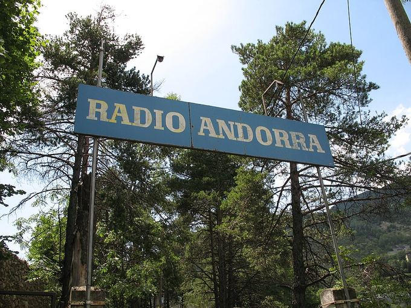

1939-45La Segona Guerra MundialContemporània
Neutral però no aïllada: racionament, passadors i tretze deportats
Context històric
Andorra no va ser ocupada ni va entrar en guerra, però la neutralitat no la va aïllar. El país depenia de les importacions, i amb França i Espanya mancades d'aliments el Consell General va repartir fulls de racionament només a les persones registrades; en paral·lel va créixer el mercat negre. Després de la derrota de França el 1940, el territori va ser lloc de pas de refugiats, jueus i militars aliats evadits. Josep Calvet calcula que unes 80.000 persones podrien haver creuat clandestinament els Pirineus, i considera Andorra un dels punts principals. Hi actuaven xarxes britàniques i passadors andorrans, alguns per solidaritat i d'altres per diners.
El 1944 van entrar al país guàrdies civils i gendarmes francesos, que hi van romandre fins al 1945 malgrat la petició de retirada del Consell. Roser Porta i Jorge Cebrián (2009) documenten tretze andorrans deportats a camps nazis, i potser en foren més.
Les fonts no expliquen per què Andorra no va ser ocupada. Dues fonts secundàries afirmen que el sufragi masculí es va suspendre el 1941 i es va restablir el 1947, però no s'ha localitzat cap decret: només es coneix que no hi va haver eleccions entre aquests anys.
Dades, lectures i dubtes
- Dada
- Racionament, mercat negre, pas de refugiats i evadits, entrada de guàrdies civils i gendarmes el 1944 i tretze andorrans deportats (Porta i Cebrián, 2009).
- Interpretació
- La xifra d'unes 80.000 persones que van creuar els Pirineus és una estimació de Calvet per al conjunt de la serralada, no per a Andorra.
- Qüestió oberta
- Per què Andorra no va ser ocupada i si el sufragi masculí es va suspendre entre el 1941 i el 1947: dues fonts secundàries ho afirmen, però no consta cap decret.
Multimèdia

- Sylvain Athiel, L'incroyable aventure de Radio Andorra (extracte, pp. 30-39), publicat pel Govern d'Andorra, en francès
- Ràdio Andorra Memory Space, a Encamp (inaugurat el 2 de juliol de 2026): arxius, enregistraments i recorregut de realitat augmentada
- Visit Andorra: fitxa del Ràdio Andorra Memory Space
Fonts
- Viquipèdia, «Andorra durant la Segona Guerra Mundial»
- Claude Benet, Traces de la Segona Guerra Mundial a Andorra, Anem Editors, 2023 (mostra consultada: sumari, pròleg de Josep Calvet i introducció)
- Roser Porta i Jorge Cebrián, Andorrans als camps de concentració nazi, Govern d'Andorra, 2009. Citat a la Viquipèdia
- Sylvain Athiel, L'incroyable aventure de Radio Andorra (extracte, Govern d'Andorra)
- Swarthmore College, Global Nonviolent Action Database (cita la revocació del sufragi el 1941)